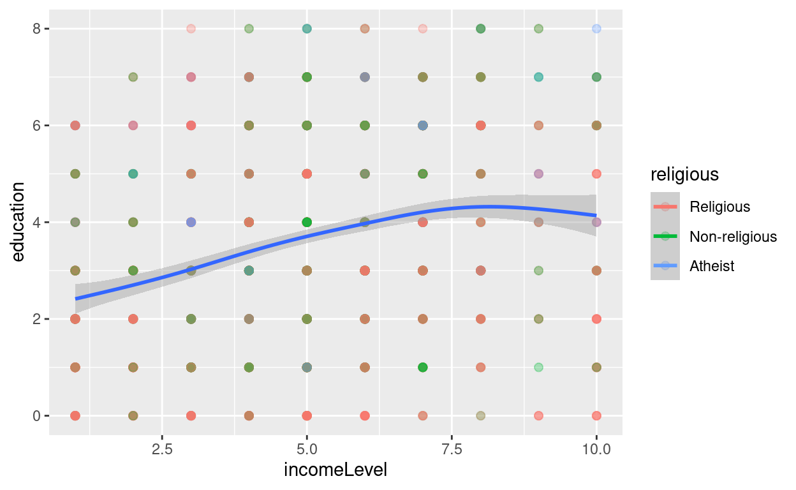
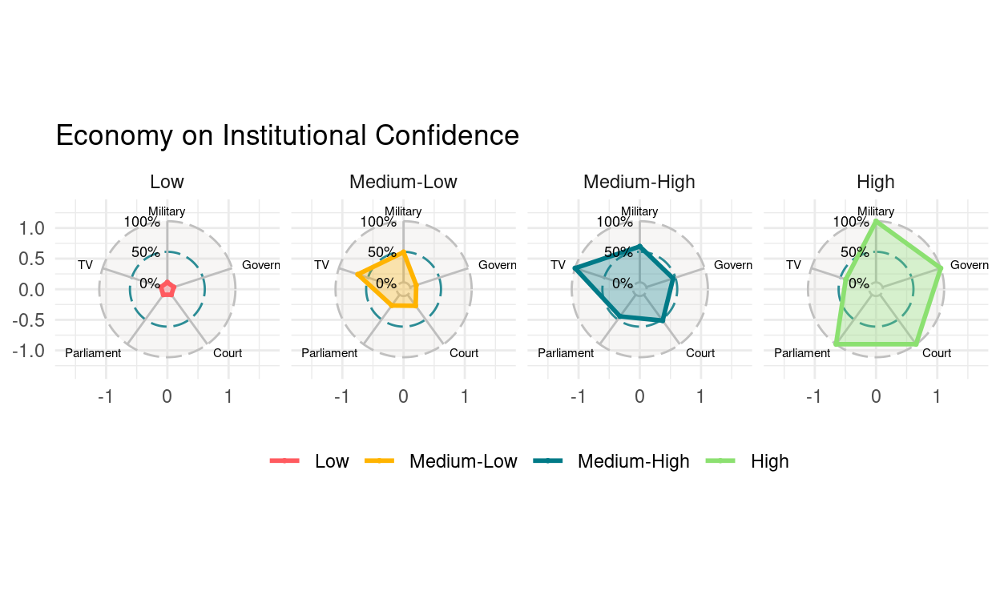
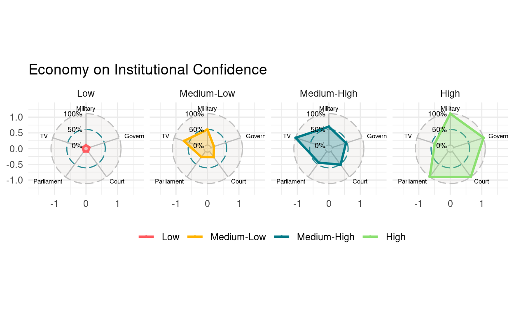

Data Visualization
Key Points
- Research Question： Does economic inequality have social and
political consequences?
- Does economic inequality affect educational levels?
- How does a person’s family economic status affect the average level of education?
- Does a family’s religious belief change the impact of their economic status on the average education level?
- Does economic inequality affect political trust?
- How does a person’s family income level affect an individual’s trust in state institutions (eg, government, courts, parliament, army, media)?
- Does economic inequality affect educational levels?
- Build-in Visualization
latticeggplot
Sample Data
We still use a sample of WVS7 for demonstration in this part.
Specific variable information can be viewed through
?drhur::wvs7.
library(drhur)
data("wvs7")Visualization Engines
In the R programming language, there are three engines that can be used for data visualization:
- Build-In Engine
latticeEngineggplot2Engine
We will demonstrate this for scatterplots in the following sections.
The question we are concerned with is whether people of different age
groups have different views on income distribution. We use
equalIncentive in wvs7 to measure people’s
perception of income distribution.
Build-In Visualization
The Build-In visualization engine is a built-in visualization method in R that can be used without calling any software packages. It has the following characteristics:
Advantages
- No installation required
- Responds quickly
- Has a strong foundation in 3D and spatial views
Disadvantages
- Not very refined
- Poor flexibility
Scatterplot of Family Wealth and Education Level
plot(wvs7$incomeLevel, wvs7$education)
## add decorationplot(
wvs7$incomeLevel, wvs7$education,
main = "Family Income and Education",
xlab = "Family Income",
ylab = "Education Level"
)
abline(lm(education ~ incomeLevel, data = wvs7), col = "red") # regression
lines(lowess(wvs7$incomeLevel, wvs7$education, delta = 0.01 * diff(range(wvs7$age, na.rm = TRUE))), col = "blue") # lowess line (x,y)Save Output
- Compatibility modes:
.jpg,.png,.wmf,.pdf,.bmp, andpostscript. - Process:
- Enable the device
- Drawing
- Turn off the device
png("scatterBasic.png")
plot(wvs7$incomeLevel, wvs7$education)
dev.off()ggsave(<plot project>, "<name + type>"):- When
<plot project>is omitted, R will save the last displayed plot. - Users can also use other parameters to adjust size, path, scale, etc.
- When
ggsave("cfr.png")lattice Visualization
lattice is a plotting tool developed by Deepayan Sarkar,
an associate professor at the Indian Statistical Institute, with the aim
of bringing the “trellis graph” plotting concept into R visualization,
optimizing R’s built-in plotting engine.
In this series, the plotting commands are more systematic and have greater flexibility:
library(lattice)
xyplot(education ~ incomeLevel, data = wvs7)xyplot(
education ~ incomeLevel,
group = female,
type = c("p", "g", "smooth"),
main = "Family Income on Education",
xlab = "Income",
ylab = "Education",
data = wvs7,
auto.key = TRUE
)
xyplot(
education ~ incomeLevel | religious,
group = female,
type = c("p", "g", "smooth"),
main = "Family Income on Education",
xlab = "Income",
ylab = "Education",
data = wvs7,
auto.key = TRUE
)
cloud(education ~ incomeLevel * religious, data = wvs7)Learning by Doing
Please group by country and plot a scatter plot of education level and income.xyplot(
education ~ incomeLevel | country,
layout=c(5,3),
type = c("p", "g"),
main = "Family In come on Education",
xlab = "Income",
ylab = "Education",
data = wvs7,
auto.key = TRUE
)ggplot2 Visualization
ggplot2 is a visualization package for R that applies a
more systematic approach to visualization theory, based on Leland
Wilkinson’s The Grammar of Graphics. This approach
fundamentally reformed the way R visualizations are created.
Today, this visualization grammar has become the most popular and rapidly evolving visualization tool in the R language community.
install.packages("ggplot2")
library(ggplot2)Core Concepts of ggplot
mapping: Aesthetic mappings (aes,alpha)—color, shape, size, etc.- Properties that can be perceived from a plot.
- Each aesthetic can be mapped to a variable or set as a constant.
geom_*: Geometric objects—points, lines, bars, etc., used to specify how data should be presented.

Universal Template
ggplot(data = <data>) +
geom_<shape1>(
mapping = aes(x = <x-axis variable>, y = <y-axis variable>,
color = <border color>,
fill = <fill color>,
size = <size>,
......),
alpha = <transparency, 0--1>
) +
geom_<shape2> +
<scale, coordinate system, color scheme>... Application Cases

## NULL 

Case 1
Scatter plot: The impact of economic and cultural factors on individuals’ education level
Hint: The process of ggplot drawing is very similar to our common PS image retouching. The basic image is made first, and then the filter effect is superimposed layer by layer.
wvs7_narm <-
filter(wvs7,
if_all(c(incomeLevel, education, religious), ~ !is.na(.)))
ggplot(data = wvs7_narm,
aes(x = incomeLevel, y = education, color = religious))ggplot(data = wvs7_narm,
aes(x = incomeLevel, y = education, color = religious)) +
geom_point(size = 2, alpha = 0.3) +
geom_smooth(aes(color = NULL), se = TRUE)
labs(
title = "Economy on Education" ,
subtitle = "Scatter plot + density distribution",
x = "Family Income",
y = "Education"
) +
theme_minimal() +
theme(ggside.panel.scale = 0.4)Case 2
Bar plot: The differential impact of the economy on average education levels across cultural factors.
Hint: Each type of graphical property has a default scale, which can be used not only to change the ratio but also to change the color in plotting.
wvs7_agg <- group_by(wvs7_narm, incomeLevel, religious) %>%
summarise(mean_ed = mean(education),
sd_ed = sd(education),
se_ed = sd_ed / sqrt(n()),
lb_ed = mean_ed - stats::qnorm(1 - (1 - 0.95) / 2) * se_ed,
ub_ed = mean_ed + stats::qnorm(1 - (1 - 0.95) / 2) * se_ed)
ggplot(wvs7_agg, aes(x = incomeLevel, y = mean_ed, fill = religious))wvs7_agg <- group_by(wvs7_narm, incomeLevel, religious) %>%
summarise(mean_ed = mean(education),
sd_ed = sd(education),
se_ed = sd_ed / sqrt(n()),
lb_ed = mean_ed - stats::qnorm(1 - (1 - 0.95) / 2) * se_ed,
ub_ed = mean_ed + stats::qnorm(1 - (1 - 0.95) / 2) * se_ed)
ggplot(wvs7_agg, aes(x = incomeLevel, y = mean_ed, fill = religious)) +
geom_bar(stat = "identity",
color = "black",
position = position_dodge()) +
geom_errorbar(aes(ymin = lb_ed, ymax = ub_ed),
width = 0.2,
position = position_dodge(.9)) +
geom_point(
data = wvs7_narm,
aes(y = education, shape = religious),
position = position_jitterdodge(),
alpha = 0.3
) +
labs(
title = "Economy on Education over Culture" ,
subtitle = "Mean Bar, Error Intervals, and Jitter Plots",
x = "Family Income",
y = "Education"
) +
theme_minimal() +
theme(legend.position = "top") +
scale_fill_viridis_d()Case 3
Radar Chart: The impact of household economic level on individual mechanism confidence
Hint: Use facets to highlight the effect.
income_qnt <- quantile(wvs7$incomeLevel, seq(0, 1, .25), na.rm = TRUE)
wvs7_agg2 <- filter(wvs7, !is.na(incomeLevel)) %>%
mutate(group = cut(incomeLevel, income_qnt, include.lowest = TRUE) %>% ordered(label = c(
"Low", "Medium-Low", "Medium-High", "High"
))) %>%
group_by(group) %>%
summarise(across(
c(
confidence_armedForce,
confidence_gov,
confidence_court,
confidence_parliament,
confidence_tv
),
mean,
na.rm = TRUE
)) %>%
mutate(across(-group, rescale)) %>%
rename(
Military = confidence_armedForce,
Government = confidence_gov,
Court = confidence_court,
Parliament = confidence_parliament,
TV = confidence_tv
)
library(ggradar)
wvs7_agg2 %>%
ggradar(
axis.label.size = 2,
group.point.size = 0.5,
group.line.width = 1,
grid.label.size = 3,
fill = TRUE,
fill.alpha = 0.3,
plot.title = "Economy on Institutional Confidence"
) +
theme_minimal() +
theme(legend.position = "bottom")income_qnt <- quantile(wvs7$incomeLevel, seq(0, 1, .25), na.rm = TRUE)
wvs7_agg2 <- filter(wvs7, !is.na(incomeLevel)) %>%
mutate(group = cut(incomeLevel, income_qnt, include.lowest = TRUE) %>% ordered(label = c(
"Low", "Medium-Low", "Medium-High", "High"
))) %>%
group_by(group) %>%
summarise(across(
c(
confidence_armedForce,
confidence_gov,
confidence_court,
confidence_parliament,
confidence_tv
),
mean,
na.rm = TRUE
)) %>%
mutate(across(-group, rescale)) %>%
rename(
Military = confidence_armedForce,
Government = confidence_gov,
Court = confidence_court,
Parliament = confidence_parliament,
TV = confidence_tv
)
wvs7_agg2 %>%
ggradar(
axis.label.size = 2,
group.point.size = 0.5,
group.line.width = 1,
grid.label.size = 3,
fill = TRUE,
fill.alpha = 0.3,
plot.title = "Economy on Institutional Confidence"
) +
theme_minimal() +
theme(legend.position = "bottom") +
facet_wrap(~ group, ncol = 4)Case 4
If there are many cross-classifications resulting in numerous cross-groups, and each group has a quantity that needs to be displayed. Using stacked or bar graphs can be overly complex, making the results difficult to interpret.
Instead, a heatmap can be used, where the x-axis and y-axis represent the two categories, and the quantity is represented by the color of the block at the intersection of the coordinates.
Now use the heat map to show the average level of trust in the government by people with different levels of education and income.
wvs7 %>%
select(education, incomeLevel, confidence_gov) %>%
group_by(education,incomeLevel) %>%
summarise(confidence_gov = median(confidence_gov, na.rm=TRUE)) %>%
ungroup() -> wvs7_confidencewvs7 %>%
select(education, incomeLevel, confidence_gov) %>%
group_by(education,incomeLevel) %>%
summarise(confidence_gov = median(confidence_gov, na.rm=TRUE)) %>%
ungroup() -> wvs7_confidence
p <- ggplot(data = wvs7_confidence, mapping = aes(
x = education, y = incomeLevel, fill = confidence_gov))
p + geom_tile() +
scale_fill_viridis_c()Summary and Supplement
data: the data you want to visualizeaes: aesthetic mappinggeoms: geometric objectslabs:title, subtitle: yitlex, y: axis labelscaption: caption
theme: backgroundscales: connects data to mappingfacet: a facet specification describes how to break up data into setscoord: a coordinate system that describes how data coordinates are mapped to the plane of the graphic
stats: statistical transformations
Final Tips
- good-looking ∝ complexity
- Cooler graphics doesn’t mean better.